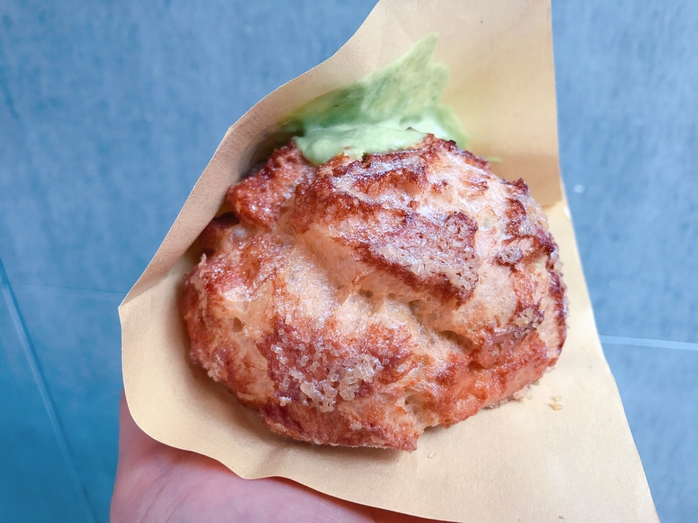

新巧屋烘焙
第9號乳酪蛋糕點心坊
提拉米蘇
提拉米蘇

攤位的擺設真的超級可愛，每一個地方都可以看出老闆娘很用心的擺
設，很多地方都很適合拍美照，人再多都擠得下地方拍照唷每天販售
的泡芙口味都不一樣，可以在開賣前上臉書看看他們今天賣的口味是
什麼，決定要不要前往拜訪唷。看看每個泡芙殼都超級大顆，吃到邊
緣沒有內餡的部分也是超級好吃，整個咬下去會非常酥脆，好喜歡如
果喜歡吃酥脆外皮的朋友，一定要現吃，外皮真的吃起來會有卡滋卡
滋的聲音出現。但是如果吃不習慣的朋友店家建議帶回家冰在冰箱一
段時間後，外皮會變得較鬆軟內餡也會更冰涼綿密。雖然，內餡是屬
於口味較清淡的，可能當下吃會覺得口味稍淡，但把整個泡芙吃完後
，過段時間竟然口中都是泡芙的香氣以及淡淡的阿華田牛奶味，應該
就是所謂的口齒留香
|